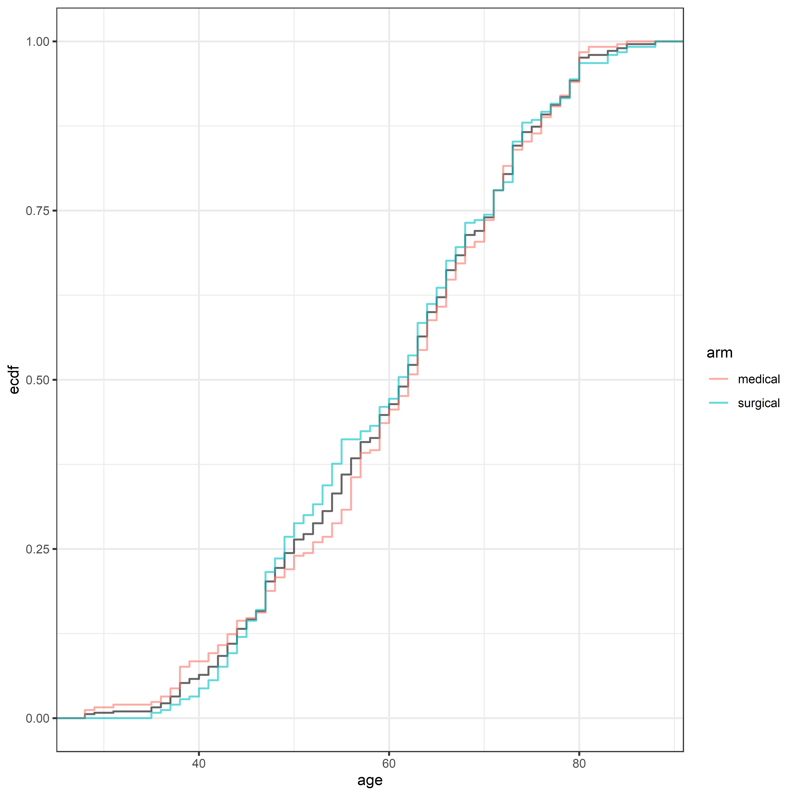
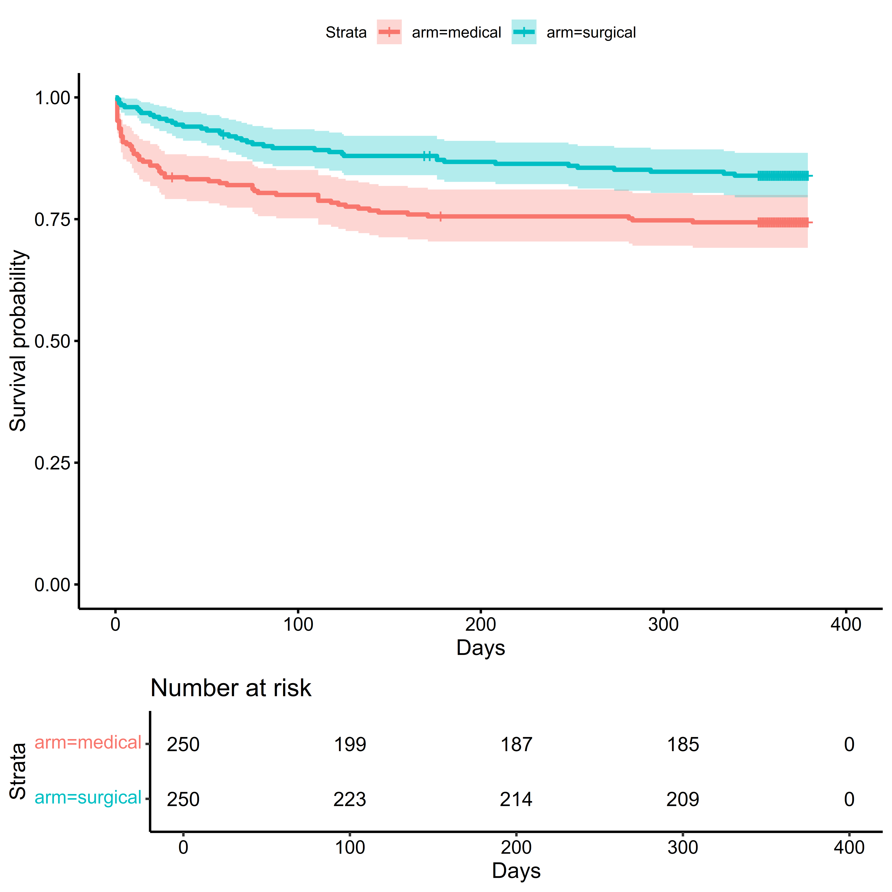
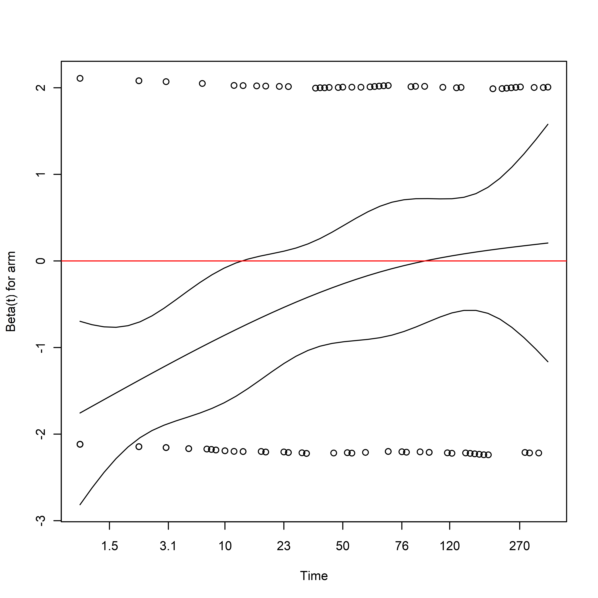
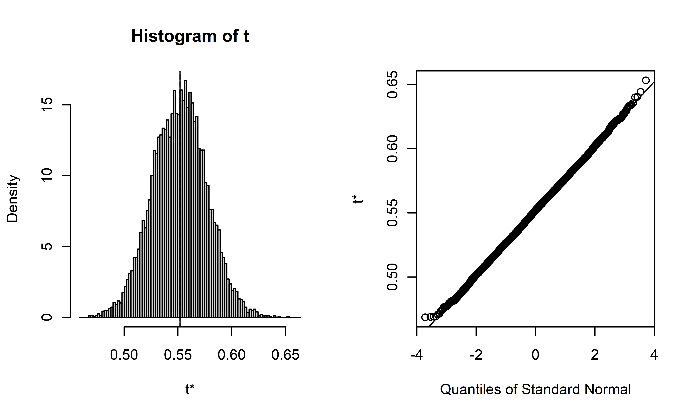
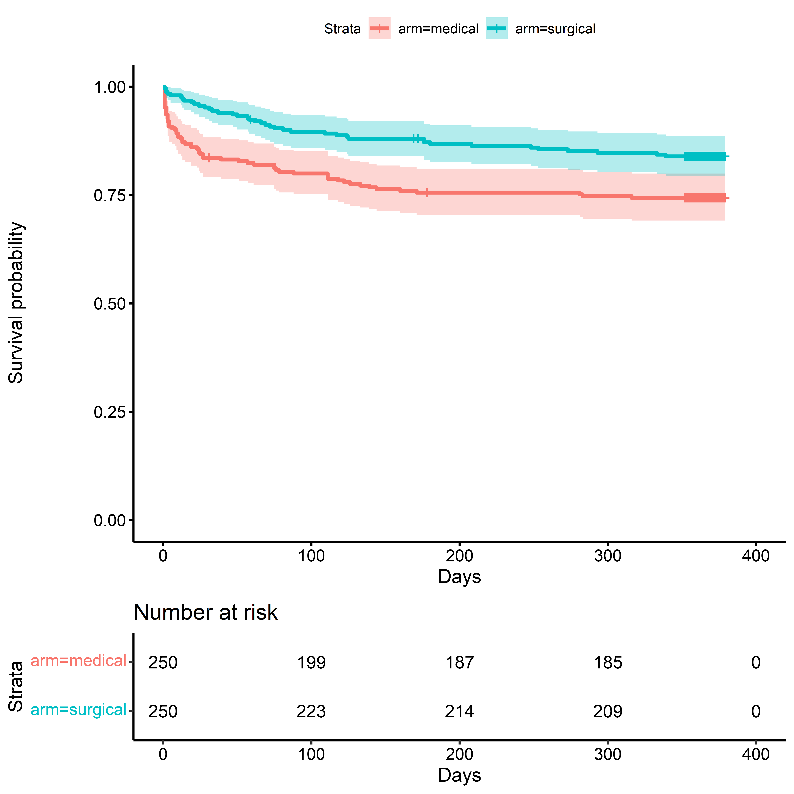
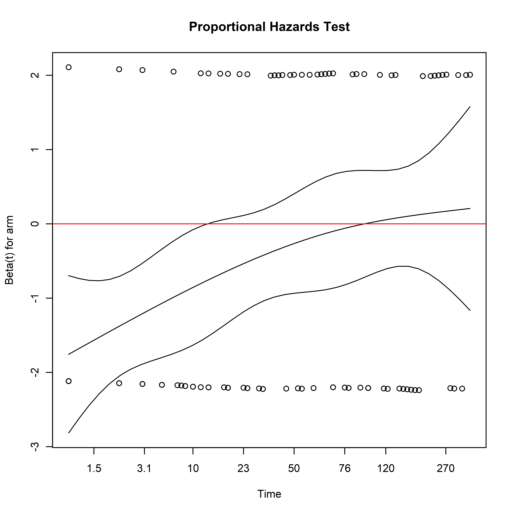

## Warning: package 'tidyverse' was built under R version 4.3.1## Warning: package 'table1' was built under R version 4.3.1results_code_file <-
"cache_results.r"
cached_results_file <-
"covariateadjustment_github_io_cached.Rdata"
results_code_path <-
file.path(getwd(), results_code_file)
cached_results_path <-
file.path(getwd(), cached_results_file)
cached_results_exist <-
file.exists(cached_results_path)
if(cached_results_exist) {
load(file = cached_results_path)
} else {
source(file = results_code_path)
}Randomized trials are an important tool for generating evidence to inform practice in medicine, public health, science, and industry. Planning ethical, informative, and cost-effective studies requires many careful considerations when deciding on the study design and analysis plan. One of these considerations should be how to utilize the information about study participants which is known before randomization takes place. Variables observed prior to randomization, known as baseline covariates, can provide information about the outcomes that are observed during the study. Leveraging the information in baseline covariates could improve our inference about the potential benefits or harms of an intervention. Utilizing this information effectively in the study design and analysis plan has the potential to reduce the number of participants required or the duration of the study without sacrificing the precision of our inference. Such methods can make evaluating interventions more ethical and cost effective, and is generally supported by regulatory agencies.
This book is about the practice of applying covariate adjustment in randomized trials. While there are many approaches for covariate adjustment, our focus will be on estimating the average outcome in a population under different potential treatment assignments, known as marginal treatment effects. Investigators may be interested in comparing the average outcome within strata of a population under different potential treatment assignments, which are known as conditional treatment effects. While conditional treatment effects will arise in our discussion along the way, they will not be our primary focus.
Since randomized trials serve such an important role in policy and practice, stakeholders may be understandably cautious about changing how such research is carried out. It is important that investigators, regulators, reviewers, and readers trust the methods chosen for an application and understand how they compare to potential alternative approaches. It is natural to ask what assumptions are required for the validity of a covariate adjusted analysis, how such results should be interpreted, and how these differ from an unadjusted approach.
The methods that we consider should meet certain acceptability criteria. Firstly, an acceptable approach must not change the statistical and scientific focus of investigation. In other words, our covariate-adjusted approach should infer about the same quantities of interest, or estimands, as an unadjusted approach. Secondly, an acceptable approach must not require stronger, more restrictive assumptions: the assumptions for the validity of a covariate-adjusted approach should be the same or less stringent than an unadjusted approach. Finally, a covariate-adjusted approach should have the same or better precision than the unadjusted estimator.
Statisticians rely on regression models in many contexts to relate covariate information to an outcome of interest. Before interpreting regression coefficients, there is often a great deal of consideration put into choosing an appropriate specification for the model: which variables should be included in the model, how they should be included, and how to link the covariates to the scale of the outcome. Appropriate interpretation and application of models requires some assumptions about how closely the fitted model is to the true data generating process, which is unknown in practice.
Since regression models are used to perform covariate adjustment, it is natural to ask whether using such models also requires assumptions about how closely the specified model is to the true data generating process. What may be surprising to some is that covariate adjusted analyses can be valid under arbitrary model misspecification. Even though covariate adjustment may use regression models to construct an estimator, the validity of the resulting estimator does not require that the model is correctly specified. This is particularly important if we are to have covariate-adjusted methods that do not require stronger assumptions than an unadjusted analysis. Use of regression models allow us to do covariate-adjusted analyses for continuous, binary, ordinal, or time-to-event outcomes, allowing them to be applied to many research areas and questions.
While covariate adjustment has the potential to improve precision and make research more ethical and cost effective, there are still challenges to be addressed in practice. Firstly, the amount of precision gained by using covariate adjustment is not known a priori. We need study designs and analysis plans that guarantee the desired level of statistical power and control of error rates irrespective of the amount of precision gained by using covariate adjustment. Secondly, we need a theoretical framework which includes a broad class of estimators in a single framework. The methods employed must address missing data due to dropout, and incomplete data from participants whose outcomes have yet to be collected. Investigators need the information to effectively advocate for the use of these methods with stakeholders, regulators, and reviewers. Practitioners need validated, freely available software to make applying these methods straightforward. Finally, general guidance and best practices need to be established so as to make covariate adjusted analyses as well understood and trusted as their unadjusted counterparts. We will address each of these challenges in the material ahead.
This book is meant to provide worked examples to help practitioners apply covariate adjustment in practice. The material will be most accessible to a reader who has a good understanding of probability and statistics (confidence intervals, hypothesis testing), generalized linear models, and survival analysis. Some familiarity with concepts in randomized trials and causal inference is helpful, but not required. In order to make these methods broadly available, we provide worked examples using the R environment for statistical computing, which is free and open source software. While not all users may be familiar with R, we provide example code and links to additional resources to help users understand how to apply it in practice. The data in our examples are simulated from actual randomized trial data, meant to mimic key features such as missingness patterns and the distribution of outcomes and covariates.
We will start with an overview of key ideas and findings from research in randomized trial methodology. From there, we will discuss different targets of inference, or estimands, that may be of interest to investigators. Afterwards, we provide a brief overview of using R, and how to install the necessary software to perform covariate adjustment. With the necessary background in place, we will begin with the most simple and commonly used approach for covariate adjustment, the analysis of covariance (ANCOVA), show how this approach can be generalized to binary and other types of outcomes. From there, we will discuss how to address the issues of missing data in baseline covariates and outcomes using doubly robust methods.
Since randomized trials are often designed with incomplete and imprecise information, the study design should incorporate pre-planned analyses to determine if the study should continue or be stopped for either success or futility. We discuss how covariate adjustment can be integrated into such analysis plans. Finally, we discuss some recommendations for applying these methods in practice.
The datasets used in our examples are simulated data based on actual randomized trials, with considerable effort spent making the data as realistic as possible. The original study data was used to create regression models for the outcomes of interest and missingness patterns. Next, simulated covariate data were created by resampling the original covariate data, and perturbing the resampled data. Simulated outcome data and missingness patterns were generated using predictions from the outcome regression models, using the simulated covariates as input.
CTN-03 (NCT00078117) was two-arm a phase III trial to compare two potential tapering schedules of the drug buprenorphine, a pharmacotherapy for opioid dependence. At the time of the study design, there was considerable variation in tapering schedules in practice, and a knowledge gap in terms of the best way to administer buprenorphine to control withdrawal symptoms and give the greatest chance of abstinence at the end of treatment. It was hypothesized that a longer taper schedule would result in greater likelihood of a participant being retained on study and providing opioid-free urine samples at the end of the drug taper schedule.
Participants were randomized 1:1 to a 7-day or 28-day taper using stratified block randomization across 11 sites in 10 US cities. Randomization was stratified by the maintenance dose of buprenorphine at stabilization: 8, 16, or 24 mg. The structure of the CTN-03 simulated data is as follows:
age: Participant age at baselinesex: Participant sexrace: Participant raceethnic: Participant ethnicitymarital: Participant marital statusarm: Treatment Armstability_dose: Stratification Factor_bl) & End-Of-Taper (_eot) Outcomes:
arsw_score: Adjective Rating Scale for Withdrawal (ARSW) Score at baselinecows_score: Clinical Opiate Withdrawal Scale (COWS) Score at baselinecows_category: COWS Severity Category - Ordinalvas_crave_opiates: Visual Analog Scale (VAS) - Self report of opiate cravingsvas_current_withdrawal: Visual Analog Scale (VAS) - Current withdrawal symptomsvas_study_tx_help: Visual Analog Scale (VAS) - Study treatment helping symptomsuds_opioids: Urine Drug Screen Result - Opioidsuds_oxycodone: Urine Drug Screen Result - Oxycodoneuds_any_positive: Urine Drug Screen - Any positive resultHemorrhagic stroke occurs when a blood vessel in the brain ruptures, causing a bleed inside the skull. The bleeding from an ICH can occur in the brain tissue itself (an intracerebral hemorrhage, or ICH), or in the fluid-filled channels in the brain (an intraventricular hemorrhage, or IVH). The MISTIE III trial (NCT01827046) was a phase III study comparing a minimally invasive surgical intervention to conventional medical management for the treatment of spontaneous, non-traumatic ICH.
In this study, participants were randomized 1:1 to receive either standard-of-care medical management or a minimal invasive surgery with Alteplase for ICH removal. Outcomes were measured at 30, 180, and 365-days post-randomization using the Modified Rankin Scale (MRS), which measures functional outcome on a scale ranging from 0 (no residual symptoms) to 6 (death). The MRS was collapsed into a binary variable, representing a score of 0-3 (no symptoms to moderate disability but able to walk without assistance) or 4-6 (unable to walk or attend to daily activities without assistance to death). Survival was also assessed, with patients administratively censored on the date of their final MRS assessment.
The data from MISTIE III was used to create a synthetic dataset for educational purposes. Baseline covariates include demographics, medications and comorbidities, characteristics of the stroke (location of the ICH lesion, the size of the ICH and IVH lesions on CT scans), and neurological status on presentation to the hospital (the Glasgow Coma Scale, or GCS).
In addition to the longitudinal measures of the MRS at 30-, 180-, and 365-days post randomization, mortality data are included. The structure of the data is as follows:
sim_participant_id: Patient idage: Age in yearsmale: male sexhx_cvd: cardiovascular disease historyhx_hyperlipidemia: hyperlipidemia historyon_anticoagulants: on anticoagulant medicationon_antiplatelets: on antiplatelet medicationich_location: intracerebral hemorrhage location: (Lobar, Deep)ich_s_volume: intracerebral hemorrhage volume on stability scanivh_s_volume: intraventricular hemorrhage volume on stability scangcs_category: presenting Glasgow Coma Score (GCS)arm: treatment armich_eot_volume: intracerebral hemorrhage volume on end-of-treatment scanmrs_30d: MRS at 30 days (0-3, 4, 5, 6)mrs_30d_complete: MRS at 30 days if no data were missingmrs_180d: MRS at 180 days (0-2, 3, 4, 5, 6)mrs_180d_complete: MRS at 180 days if no data were missingmrs_365d: MRS at 365 days (0-1, 2, 3, 4, 5, 6)mrs_365d_complete: MRS at 365 days if no data were missingdays_on_study: days until death or administrative censoringdied_on_study: participant died (1) or is censored (0)In this section, we will lay out the notation for the following chapters, discuss what assumptions are required for these methods to be applied, and survey the literature on covariate adjustment. While the examples and notation focus on trials with two treatment arms, most methods can be applied to trials with more than two treatment arms.
Let \(A\) denote a binary treatment assignment: \(A = 1\) indicates assignment to receive the treatment of interest, and \(A = 0\) indicates assignment to the control or comparator group. Let \(Y\) denote the outcome of interest, and \(X\) denote a vector of baseline covariates. If stratified randomization is used, let \(X_{S}\) denote the stratification variables, and \(X_{\bar{S}}\) denote the other baseline covariates, and \(X = (X_{S}, X_{\bar{S}})\). We assume that treatment assignment is independent of the baseline covariates, i.e. \(A \perp X\), or if stratified randomization is used, that the treatment assignment is conditionally independent of the other covariates given the stratification variables, i.e. \(A \perp\!\!\!\perp X_{\bar{S}} \vert X_{S}\). Each participant’s data is assumed to be independent, identically distributed (IID) draws from an unknown distribution \(P(X, A, Y)\).
In order to include covariate information in an analysis, we have to specify how these covariates relate to the outcome in a regression model, which models a conditional distribution of the outcome as as a function of the covariates. In most circumstances, the validity of our inference from regression models depends on how close the regression model’s specification reflects the true data generation mechanism, which is almost always unknown. This may make investigators understandably reluctant to use covariate adjusted methods, as they do not want the validity of the analysis to depend on assumptions of a correctly specified model.
What may be surprising is that there are covariate adjustment methods that provide valid estimates of the treatment effect, even if the models used to obtain these estimates are arbitrarily misspecified. Having models that more closely reflect the underlying data generating mechanism improves precision and power. Additionally, covariate adjusted estimators also can have precision that is equal or better than the unadjusted estimators.
The ANCOVA is perhaps the best known method for covariate adjustment with a continuous outcome. The simplest version of an ANCOVA is a linear regression of the final outcome \(Y\) on the baseline covariate \(X\), usually the outcome measured at baseline, and treatment assignment \(A\):
\[Y_{i} = \beta_{0} + \beta_{X}X_{i} + \beta_{A}A_{i} + \epsilon_{i}\]
This regression model assumes that the final outcome is linearly related to the outcome at baseline, with an additive effect of treatment. Even if the true relationship between the final outcome and the baseline covariate is nonlinear, includes interactions, and includes other variables that are omitted from the model, the ANCOVA estimate will provide a consistent estimate of the treatment effect that is as precise or even more precise than an unadjusted estimate. An outcome model that more accurately reflects the data generating mechanism will improve precision, but is not required for a consistent estimate of the outcome.
Linear regression involves the conditional mean, but we are interested in a marginal treatment effect. In order to obtain a marginal treatment effect, we need to marginalize (i.e. average over) the variation in the covariates:
\[\hat{\mu}_{1} = \hat{E}[Y \vert A = 1] = \frac{1}{n} \sum_{i=1}^{n} \hat{E}[Y_{i} \vert A_{i} = 1, X_{i}]\]
In the case of the simple ANCOVA model with only one covariate, the marginal mean under treatment would be:
\[\hat{\mu}_{1} = \frac{1}{n} \sum_{i=1}^{n} \hat{E}[Y_{i} \vert A_{i} = 1, X_{i}] = \frac{1}{n} \sum_{i=1}^{n} (\hat{\beta}_{0} + \hat{\beta}_{X}X_{i} + \hat{\beta}_{A}) = \hat{\beta}_{0} + \hat{\beta}_{X}\bar{X}_{n} + \hat{\beta}_{A}\] Note that this utilizes the covariate data from the entire sample, not just those who were assigned to receive the active treatment. The marginal mean under control would be:
\[\hat{\mu}_{0} = \frac{1}{n} \sum_{i=1}^{n} \hat{E}[Y_{i} \vert A_{i} = 0, X_{i}] = \frac{1}{n} \sum_{i=1}^{n} (\hat{\beta}_{0} + \hat{\beta}_{X}X_{i}) = \hat{\beta}_{0} + \hat{\beta}_{X}\bar{X}_{n}\] Likewise, our marginal estimate of the mean under control utilizes the covariate data from the entire sample, not just those who were assigned to receive the control treatment. Our estimate of the average treatment effect would be the contrast between these quantities:
\[\hat{\theta}_{ATE} = \hat{\mu}_{1} - \hat{\mu}_{0} = (\hat{\beta}_{0} + \hat{\beta}_{X}\bar{X}_{n} + \hat{\beta}_{A}) - (\hat{\beta}_{0} + \hat{\beta}_{X}\bar{X}_{n}) = \hat{\beta}_{A}\]
The procedure for gives us the same result as we would have otherwise used to estimate the treatment effect: the regression coefficient associated with treatment. When there are no treatment-by-covariate interactions and the model does not use a nonlinear link function, the conditional effect and the marginal effect coincide. However, the approach outlined here is applicable to a wide range of outcome models, including those using link functions, like logistic regression, or models that include treatment-by-covariate interactions. Computing the variance or standard errors of the estimate involves the use of the nonparametric bootstrap or appropriate robust standard errors for the study design and model specification.
In general, if we have a regression model \(\hat{f}(X, A) = \hat{E}[Y \vert A, X]\), we can obtain the average treatment effect by respectively computing the marginal mean under treatment and control, and taking a contrast between these quantities:
\[\hat{\theta}_{ATE} = \hat{\mu_{1}} - \hat{\mu_{0}} = \left(\frac{1}{n} \sum_{i=1}^{n} \hat{f}(X_{i}, A_{i} = 1) \right) - \left(\frac{1}{n} \sum_{i=1}^{n} \hat{f}(X_{i}, A_{i} = 0) \right)\] This approach is known as G-computation or the standardization estimator. This allows us to obtain the average treatment effect for regression models which may include interactions or use a nonlinear link function, such as logistic regression.
Stratified randomization is a way of addressing the potential for baseline imbalance in covariates at the design phase by having a separate randomization sequence for each stratum of baseline variables. Each randomization sequence is constructed by randomly choosing a block size (e.g. 1, 2, or 4 participants per treatment arm), and then permuting the order of the treatment labels in each block. For example, below is a sequence of three blocks, the first with size 3, the second and third with size 2.
[ABBABA][BABA][BAAB]
Randomly choosing block sizes makes it difficult to anticipate when blocks begin and end, and thus which treatment the next participant will receive. Balance between treatment arms within a stratum is achieved whenever a block is completed. Stratifying randomization on too many variables can lead to many incomplete blocks, and thus poor within-stratum balance in treatment allocation. Stratified randomization generally provides the greatest benefit in efficiency when there is high variability between strata and lower variability within strata.
When stratified randomization is utilized, it is generally recommended to adjust for the stratification variables in the analysis. Unfortunately, this may not be done in practice. Additional improvements in efficiency can be realized using a variance estimator specifically designed for stratified randomization designs (Wang et al. 2020).
When an outcome is continuous or binary, one meaningful summary may be the mean of the outcome, and a meaningful comparison may be the difference in means estimand:
\[\theta_{DIM} = E[Y \vert A = 1] - E[Y \vert A = 0]\]
This estimand compares the mean outcome in the population of interest if all individuals received the treatment of interest to the the mean outcome in the population of interest if all individuals received the control or comparator intervention. Note that in binary outcomes, this is a difference in proportions (or risk difference) between the population where all individuals received the treatment of interest compared to receiving the control or comparator intervention.
The Difference in Means gives an absolute measure of an effect. For a relative measure of an effect, such as the relative risk, we can compare the ratio of these means:
\[\theta_{ROM} = E[Y \vert A = 1]/E[Y \vert A = 0]\]
Let \(Y\) be an ordinal outcome with \(k\) ordered categories. For each outcome category \(j \in \{1, \ldots, K\}\), the cumulative distribution function of \(Y\) given treatment \(A\) is denoted as:
\[Pr \left\{Y \le j\right\} = F(j \vert a)\]
The probability mass function of \(Y\) given treatment \(A\) is denoted as:
\[Pr \left\{Y = j\right\} = f(j \vert a) = F(j \vert a) - F(j-1 \vert a)\]
Although this notation involves numeric labels for levels, this is merely to simplify notation. Clarifications will be made as needed when distinguishing between outcomes with and without a numeric levels.
If the levels of \(Y\) have numeric labels, and the mean value of this ordinal variable is meaningful, the difference in means estimand may still be meaningful and useful. Alternatively, if either the labels do not have a numeric interpretation, or the mean of these values is not particularly meaningful, it may be possible to create a meaningful numeric value by assigning ‘utilities’ or ‘weights’ to each level of the outcome. The quantitative and clinical meanings of the difference in means estimator will depend on the utilities assigned to the outcome scale. This allows the difference in means to be used, even if the levels of the outcome are not numeric (e.g. the Glasgow Outcome Scale, ranging from ‘Dead’, ‘Vegetative state’, ‘Severely disabled’, ‘Moderately disabled’, and ‘Good recovery’).
Let \(u(\cdot)\) denote a pre-specified mapping from the outcome labels to utility values:
\[ u(Y)= \begin{cases} u_{1} := \text{utility of } Y = 1\\ u_{2} := \text{utility of } Y = 2\\ \vdots \\ u_{k} := \text{utility of } Y = k \end{cases} \]
The utilities will usually be monotone increasing, such that each succesive level of the outcome is associated with equal or better utility. Alternatively, if lower values of the outcome are preferable, utilities will usually be monotone decreasing.
Once the utilities have been defined, the estimand is defined as:
\[\theta_{DIM} = E[u(Y) \vert A=1] - E[u(Y) \vert A=0] = \sum_{i=1}^{k}u(j)\left(f( j \vert 1) - f(j \vert 0)\right)\]
When all outcomes at or above a threshold \(t \in \{2, \ldots, k\}\) are given a utility of 1, and all others are given a utility of 0, this collapses the ordinal outcome into a binary one. The resulting estimand is the risk difference estimator of the outcome being at or above \(t\):
\[ u(Y)= \begin{cases} 1: & Y \geq t \\ 0: & Y < t \end{cases} \]
While a risk difference may be more familiar to implement and conceptually easier to interpret, it treats all outcome states either below or above the threshold identically, ignoring potential information in such outcome states.
The Mann-Whitney estimand gives the probability that a randomly-selected person assigned to treatment of interest will have an outcome on the same level or a higher level than a randomly-selected person assigned to the comparator group, with ties broken at random:
\[\theta_{MW} = P(\tilde{Y} > Y \vert \tilde{A} = 1, A = 0) + \frac{1}{2}P(\tilde{Y} = Y \vert \tilde{A} = 1, A = 0) = \\ \sum_{j=1}^{K} \left\{ F(j-1 \vert 0) + \frac{1}{2} f(j \vert 0) \right\} f(j \vert 1)\]
If there is no difference in treatments, we would expect a randomly selected individual from one group to have a higher outcome than a randomly selected individual from the other group about half the time: the null value for this estimand is \(1/2\).
Note that if higher numerical values indicate worse outcomes, the outcome scale can be reversed prior to analysis, so that the estimand can be interpreted as the probability that a randomly-selected person assigned to treatment of interest will have an outcome as good or better than a randomly-selected person assigned to the comparator group.
This estimand addresses a common concern of those choosing between treatment options, and may be easier to communicate to a lay audience.
In the case of a binary outcome, the odds ratio of a “good” outcome (\(Y=1\)) is \(OR = odds(Y = 1 \vert A = 1)/odds(Y = 1 \vert A = 0)\): a value greater than 1 indicates a greater likelihood of a “good” outcome in the treatment of interest relative to the comparator group, and the log of the odds ratio will be positive.
In the case of an ordinal outcome with categories \(1, \ldots, K\), these categories can be collapsed into \((K-1)\) binary outcomes: \(Y \le j\) for \(j \in \{1, \ldots, (K-1) \}\). The odds ratio at threshold \(j\) compares the odds of falling at or below level \(j\) between the treatment of interest and the comparator group:
\[OR_{j} = \frac{odds(Y \le j \vert A = 1)}{odds(Y \le j \vert A = 0)}\]
When this odds ratio is greater than 1, individuals assigned to the treatment of interest are more likely to have outcomes at or below level \(j\) than those in the comparator group: the log of this odds ratio will be positive. The log odds ratio estimand combines information across the levels of an ordinal outcome by averaging the log odds of an outcome at or below each threshold across all thresholds of the outcome:
\[\theta_{LOR} = \frac{1}{K-1} \sum_{j=1}^{K-1} log \left( \frac{odds(Y \le j \vert A = 1)}{odds(Y \le j \vert A = 0)} \right) = \frac{1}{K-1} \sum_{j=1}^{K-1} log \left( \frac{F(j \vert 1)/ \left( 1 - F(j \vert 1) \right) } {F(j \vert 0)/ \left( 1 - F(j \vert 0) \right) } \right)\]
This estimand is related to the proportional odds logistic regression model, a common parametric model for analyzing ordinal outcomes. In the proportional odds model, a regression coefficient for treatment group gives the increase in the odds of being at or below a given level of the outcome associated with a unit increase in that variable holding all else constant:
\[log(odds(Y \le j \vert A)) = logit \left(P(Y \le j \vert A) \right) = \alpha_{j} + \beta A: \quad j \in \{1, \ldots, (K-1)\}\]
A positive slope indicates greater likelihood of lower scores in those assigned to receive the treatment of interest relative to the comparator group. The proportional odds assumption involves assuming that the treatment has the same effect across each binary threshold (i.e. that \(\beta\) does not vary across the \(K-1\) thresholds). When this assumption holds, the log odds ratio estimand is the same as the coefficient in the proportional odds model, but importantly, the validity of the LOR estimand does not depend on this assumption. As in binary and ordinal logistic regression, the null value for this estimand is 0.
Since \(-log(a/b) = log(b/a)\) and \(odds(Y > j \vert A = 1) = 1/odds(Y \le j \vert A = 1)\), changing the sign of the log odds ratio estimator tells us about the average log odds of having scores higher than level \(j\) in the treatment of interest relative to the comparator group:
\[-\theta_{LOR} = \frac{1}{K-1} \sum_{j=1}^{K-1} log \left( \frac{odds(Y > j \vert A = 1)}{odds(Y > j \vert A = 0)} \right)\]
When the outcome is the time from randomization until an event of interest occurs, let \(Y\) denote the time at which the event occurs, and \(C\) denote the time at which individuals would be censored. For each individual, we observe \(\delta_{i} = I_{\{Y_{i} \le C_{i}\}}\), whether an individual is censored or the event is observed, and \(T_{i} = min\{Y_{i}, C_{i}\}\), the time at which the event or censoring occurs. Often we are interested in a pre-specified time window from randomization to a scientifically relevant point in time, known as the time horizon. Let \(\tau\) denote the time horizon of interest for inference.
When the outcome is a time-to-event, the usual target of inference is the survival function, which is the marginal probability of being event-free through time \(t\) if the entire population were assigned to study arm \(A = a\):
\[S_{0}^{(a)}(t) = Pr\{Y > t \vert A = a\}\]
Estimands of interest may include the difference in survival probability up to the time horizon \(\tau\):
\[\theta_{DSP} = Pr(Y \ge \tau \vert A = 1) - Pr(Y \ge \tau \vert A = 0)\] Instead of an additive estimand, a relative estimand can be obtained by taking the ratio of survival probabilities at the time horizon \(\tau\):
\[\theta_{RSP} = \frac{Pr(Y \ge \tau \vert A = 1)}{Pr(Y \ge \tau \vert A = 0)}\]
The hazard rate for individuals receiving treatment \(A = a\), denoted \(h^{(a)}(t)\), is the instantaneous rate of the event of interest at time \(t\) among individuals who have not yet experienced the event:
\[ h^{(a)}(t) = \lim_{ \Delta t \to 0} \frac{ P(t \le Y < t + \Delta t \; \vert \; Y \ge t, A = a) }{\Delta t} = \frac{d}{dt}ln\left(S_{0}^{(a)}(t)\right)\]
The hazard ratio compares the ratio of two hazard functions:
\[\theta_{HR}(t) = \frac{h^{(1)}(t)}{h^{(0)}(t)}\]
Since both hazard functions can vary over time, the true hazard ratio can vary over time. Commonly used approaches in time-to-event analysis often require the hazard rate being approximately constant over the time interval of interest, either unconditionally or conditional on covariates. It may not be known a priori in practice whether such an assumption is reasonable, but this assumption can be empirically assessed.
When the hazard ratio varies appreciably in time, methods that make a conditional or unconditional assumption of proportional hazards are less efficient and give effect estimates whose interpretation is unclear. Even when the assumption of proportional hazards is approximately true, the hazard ratio cannot easily be translated into an easily communicated metric, such as the number of years an individual can expect to be free of the event if they were assigned to one treatment or another.
Another estimand that may be of interest is the restricted mean survival time (RMST). This estimand is the average time-to-event from randomization to the time horizon \(\tau\) (e.g. life expectancy up to \(\tau\) when mortality is the event of interest). This is given by taking the area under the survival function from randomization to the time horizon:
\[RMST = E[min\{ Y, \tau \} \vert a] = \int_{0}^{\tau} S_{0}^{(a)}(t) dt\]
Treatments can be compared using a contrast of the RMST in the population where everyone receives treatment and that same population where everyone receives the control/comparator intervention. The difference in RMST contrast assesses the area between the survival curves under each treatment scenario.
\[\theta_{DRMST} = E[min\{ Y, \tau \} \vert A = 1] - E[min\{ Y, \tau \} \vert A = 0]\] A relative estimand is given by the ratio of RMST:
\[\theta_{RRMST} = \frac{E[min\{ Y, \tau \} \vert A = 1]}{E[min\{ Y, \tau \} \vert A = 0]}\]
The R environment for Statistical Computing is a free, open source environment for managing and visualizing data and performing analyses. Its capabilities can be augmented by downloading software packages from repositories, such as the Comprehensive R Archival Network (CRAN), and more recently, GitHub. Rstudio is a powerful development environment that makes it easier to use R, expands its functionality, and allows the integration of other tools, such as Git, into an analyst’s workflow. If you are new to R or would like additional resources on using R in practice, see the appendix.
In addition to R and Rstudio, we will also need to install RTools, also known as the R toolchain. These are software tools for compiling software packages. Some of the packages we use may have to be compiled after being downloaded, and RTools provides all the software needed to do so. CRAN provides instruction on which version of RTools you should use, depending on your version of R, and how to install it.
This section is primarily about how to use R and associated software packages. While this does include demonstration of how to implement statistical models and hypothesis tests, a larger discussion of their appropriate use and interpretation will take place in later sections.
Once we have Rtools installed, we are ready to install the required packages from CRAN and Github. The install.packages() function in R can be used to install packages from CRAN, R-Forge, BioC, and other repositories via the command line. In Rstudio, users can also use the ‘Packages’ tab to see which packages are installed, their current version, and whether or not they have been loaded into the workspace for use. If you have installed the devtools package, devtools::install_github() can be used to install packages from Github or other version control repositories.
If you would like to explore which R packages are available for a given application or research area, the CRAN Task Views, including the CRAN Clinical Trials taskview, are worth exploring.
Below are some of the packages that we will use from CRAN, along with a brief description of their purposes:
required_packages <-
c("devtools",
"cobalt",
"knitr",
"margins",
"mgcv",
"sandwich",
"survminer",
"survRM2",
"table1",
"tidyverse"
)
packages_to_install <-
setdiff(
x = required_packages,
y = installed.packages(.Library)[, "Package"]
)
install.packages(packages_to_install)We will also use the following packages from Github:
Once a package has been successfully installed, we use the library() command to load it into the workspace for use:
It is possible that different packages contain a function of the same name. For example, the table1 package contains the function table1(): there are other packages that also have a function named table1(), such as the furniture package. If both of these packages are loaded, it can cause confusion about which version should be used when table1() is called. R will warn when such conflicts can arise, but as a best practice, it is useful to specify the package and function as as follows: table1::table1(). This makes code easier to use and potentially reduces ambiguity.
The data dictionary and more information about the MISTIE III study were presented earlier. All of the data needed for the examples are available on the web. To load these, we create a file connection to the URL using the url() function, and then use read.csv() to read in the comma separated values (CSV) file. To load data from a local file path, the file.path() function is useful for creating file paths. We can start by loading the simulated MISTIE III data. Once we have loaded the full data, we can use dplyr::slice to take the first 500 rows.
data_url <-
paste0("https://github.com/jbetz-jhu/CovariateAdjustmentTutorial",
"/raw/main/Simulated_MISTIE_III_v1.2.csv")
sim_miii_full <- read.csv(file = url(data_url))
# Read in data: Recast categorical variables as factors
sim_miii_full <-
sim_miii_full %>%
dplyr::tibble() %>%
dplyr::mutate(
# Convert variables from binary indicators to labeled categorical variables
male =
factor(
x = male,
levels = 0:1,
labels = c("0. Female", "1. Male")
),
across(
.cols =
all_of(
x = c("hx_cvd", "hx_hyperlipidemia",
"on_anticoagulants", "on_antiplatelets")
),
.fns = function(x) factor(x, levels = 0:1, labels = c("0. No", "1. Yes"))
),
# Convert GCS and MRS variables from character data to categorical variables
across(
.cols = starts_with("gcs") | starts_with("mrs"),
.fns = factor
),
ich_location =
factor(
x = ich_location,
levels = c("Deep", "Lobar")
),
arm =
factor(
x = arm,
levels = c("medical", "surgical")
),
tx = 1*(arm == "surgical")
)
# Take the first 500 rows
sim_miii <-
sim_miii_full %>%
dplyr::slice(1:500)Other useful functions include:
head()/tail() - Looking at the first \(n\) rows of a datasetnrow()/ncol() - Counting the rows/columns of a datasetcolnames()/rownames() - Getting the row/column names of a dataset## # A tibble: 6 × 22
## sim_participant_id age male hx_cvd hx_hyperlipidemia on_anticoagulants
## <int> <int> <fct> <fct> <fct> <fct>
## 1 1 52 1. Male 0. No 0. No 0. No
## 2 2 74 0. Female 0. No 1. Yes 1. Yes
## 3 3 62 1. Male 0. No 1. Yes 0. No
## 4 4 81 0. Female 0. No 0. No 0. No
## 5 5 73 0. Female 0. No 1. Yes 0. No
## 6 6 60 1. Male 1. Yes 1. Yes 0. No
## # ℹ 16 more variables: on_antiplatelets <fct>, ich_location <fct>,
## # ich_s_volume <dbl>, ivh_s_volume <int>, gcs_category <fct>, arm <fct>,
## # ich_eot_volume <dbl>, mrs_30d <fct>, mrs_30d_complete <fct>,
## # mrs_180d <fct>, mrs_180d_complete <fct>, mrs_365d <fct>,
## # mrs_365d_complete <fct>, days_on_study <int>, died_on_study <int>, tx <dbl>## [1] 500## [1] 22## [1] "sim_participant_id" "age" "male"
## [4] "hx_cvd" "hx_hyperlipidemia" "on_anticoagulants"
## [7] "on_antiplatelets" "ich_location" "ich_s_volume"
## [10] "ivh_s_volume" "gcs_category" "arm"
## [13] "ich_eot_volume" "mrs_30d" "mrs_30d_complete"
## [16] "mrs_180d" "mrs_180d_complete" "mrs_365d"
## [19] "mrs_365d_complete" "days_on_study" "died_on_study"
## [22] "tx"While randomization will tend to produce treatment groups that are similar on both measured and unmeasured factors, there will always be some degree of imbalance between groups in some characteristics. It is important to remember that these differences only represent confounding if groups are imbalanced on variables that are associated with the outcome. To assess the degree of imbalance, we can tabulate characteristics by treatment arm, and compute standardized differences to get a scale-free measure of the magnitude of imbalance.
table1(
~ age + male +
on_antiplatelets + ich_location + ich_s_volume + ivh_s_volume +
gcs_category | arm,
data = sim_miii
)| medical (N=250) |
surgical (N=250) |
Overall (N=500) |
|
|---|---|---|---|
| age | |||
| Mean (SD) | 60.6 (12.9) | 60.1 (12.5) | 60.3 (12.7) |
| Median [Min, Max] | 62.0 [28.0, 85.0] | 61.0 [35.0, 88.0] | 62.0 [28.0, 88.0] |
| male | |||
| 0. Female | 100 (40.0%) | 94 (37.6%) | 194 (38.8%) |
| 1. Male | 150 (60.0%) | 156 (62.4%) | 306 (61.2%) |
| on_antiplatelets | |||
| 0. No | 179 (71.6%) | 164 (65.6%) | 343 (68.6%) |
| 1. Yes | 71 (28.4%) | 86 (34.4%) | 157 (31.4%) |
| ich_location | |||
| Deep | 155 (62.0%) | 159 (63.6%) | 314 (62.8%) |
| Lobar | 95 (38.0%) | 91 (36.4%) | 186 (37.2%) |
| ich_s_volume | |||
| Mean (SD) | 47.9 (17.3) | 47.4 (16.2) | 47.7 (16.7) |
| Median [Min, Max] | 45.9 [15.2, 112] | 47.0 [12.9, 106] | 46.3 [12.9, 112] |
| ivh_s_volume | |||
| Mean (SD) | 2.46 (3.96) | 2.09 (3.40) | 2.28 (3.69) |
| Median [Min, Max] | 0 [0, 32.0] | 0 [0, 18.0] | 0 [0, 32.0] |
| gcs_category | |||
| 1. Severe (3-8) | 71 (28.4%) | 63 (25.2%) | 134 (26.8%) |
| 2. Moderate (9-12) | 111 (44.4%) | 102 (40.8%) | 213 (42.6%) |
| 3. Mild (13-15) | 68 (27.2%) | 85 (34.0%) | 153 (30.6%) |
This allows us to compare the means, medians, frequencies, and ranges of variables between groups.
## Warning: package 'cobalt' was built under R version 4.3.1cobalt::bal.tab(
x =
# Only tabulate baseline variables
sim_miii %>%
dplyr::select(
dplyr::all_of(
x = c("age", "male", "on_antiplatelets",
"ich_location", "ich_s_volume", "ivh_s_volume", "gcs_category")
)
),
treat = sim_miii$arm,
# Compute standardized differences for both binary and continuous variables
binary = "std",
continuous = "std"
)## Balance Measures
## Type Diff.Un
## age Contin. -0.0362
## male_1. Male Binary 0.0493
## on_antiplatelets_1. Yes Binary 0.1295
## ich_location_Lobar Binary -0.0331
## ich_s_volume Contin. -0.0292
## ivh_s_volume Contin. -0.1019
## gcs_category_1. Severe (3-8) Binary -0.0723
## gcs_category_2. Moderate (9-12) Binary -0.0729
## gcs_category_3. Mild (13-15) Binary 0.1480
##
## Sample sizes
## medical surgical
## All 250 250One of the many strength of R is the powerful and flexible data visualization tools in its software ecosystem: see the R Graph Gallery for some examples. The ggplot2 package, and some related packages like survminer, are useful for assessing baseline balance and visualizing outcome data.
For example, we may want to assess the cumulative distribution of a baseline covariate instead of just checking the summary statistics.
library(ggplot2)
ggplot(
data = sim_miii,
aes(
x = age
)
) +
stat_ecdf(
alpha = 0.6,
) +
stat_ecdf(
aes(color = arm),
alpha = 0.6,
) +
theme_bw()
Or we may want to create a plot of the Kaplan-Meier estimate of the survival function (see the estimands section for its definition, and the time-to-event section for further discussion).
## Warning: package 'survminer' was built under R version 4.3.1# Create a 'survival object' from event times and indicators
miii_surv <-
with(sim_miii,
survival::Surv(
time = days_on_study,
event = died_on_study
)
)
# Use survfit to calculate survival data
time_to_death_km <-
survival::survfit(
formula = miii_surv ~ arm,
data = sim_miii
)
# Create the Kaplan-Meier Plot
survminer::ggsurvplot(
fit = time_to_death_km,
conf.int = TRUE,
risk.table = TRUE,
xlab = "Days",
ylab = "Survival probability"
)
From this plot, we can see that most of the mortality occurs soon after randomization, with greater mortality in the medical management arm early in the trial. After the first 90 days, the rate of events decreases in both arms.
While covariate adjustment does involve regression modeling, an in-depth discussion of regression modeling is not needed for the purposes of implementing covariate adjustment. For those wanting a more in-depth presentation of fitting generalized linear models (GLMs) in R see Dobson & Barnett (2018).
Fitting a GLM in R is done using the glm() function. For example if we wanted to model the probability of being assigned to the surgical arm in MISTIE III by an individual’s age, ICH volume, and IVH volume, the code is as follows:
pr_mis_glm <-
glm(
formula =
tx ~ age + ich_s_volume + ivh_s_volume,
data = sim_miii,
family = binomial(link = "logit")
)Once the model has been fit, we can use it for creating summary tables, calculating confidence intervals, or generating fitted values for a new dataset:
##
## Call:
## glm(formula = tx ~ age + ich_s_volume + ivh_s_volume, family = binomial(link = "logit"),
## data = sim_miii)
##
## Coefficients:
## Estimate Std. Error z value Pr(>|z|)
## (Intercept) 0.3090527 0.5028292 0.615 0.539
## age -0.0034148 0.0070781 -0.482 0.629
## ich_s_volume -0.0008168 0.0054271 -0.151 0.880
## ivh_s_volume -0.0282560 0.0249439 -1.133 0.257
##
## (Dispersion parameter for binomial family taken to be 1)
##
## Null deviance: 693.15 on 499 degrees of freedom
## Residual deviance: 691.58 on 496 degrees of freedom
## AIC: 699.58
##
## Number of Fisher Scoring iterations: 3## 2.5 % 97.5 %
## (Intercept) -0.67578350 1.29885632
## age -0.01732742 0.01045830
## ich_s_volume -0.01148661 0.00983616
## ivh_s_volume -0.07808960 0.02017825# Calculate fitted probabilities for new data:
# 1. 65 years old, 30 mL ICH, 0 mL IVH
# 2. 70 years old, 50 mL ICH, 15 mL IVH
predict(
object = pr_mis_glm,
newdata =
data.frame(
age = c(65, 70),
ich_s_volume = c(30, 50),
ivh_s_volume = c(0, 15)
),
type = "response"
)## 1 2
## 0.5156414 0.4025950For time-to-event outcomes, such as mortality, the logrank test and Cox Proportional Hazards (PH) model are commonly used analytic approaches. Using the survival object miii_surv created earlier using survival::Surv(), we can pass this object to other functions to perform the logrank test (using survival::survdiff) and fit the Cox PH model (using survival::coxph).
mortality_logrank <-
survival::survdiff(
formula = miii_surv ~ arm,
data = sim_miii
)
mortality_logrank## Call:
## survival::survdiff(formula = miii_surv ~ arm, data = sim_miii)
##
## N Observed Expected (O-E)^2/E (O-E)^2/V
## arm=medical 250 64 49.6 4.19 8.06
## arm=surgical 250 40 54.4 3.82 8.06
##
## Chisq= 8.1 on 1 degrees of freedom, p= 0.005For the Cox PH model, the ties = "efron" argument specifies how tied survival times are addressed, and the robust = TRUE computes robust estimates of the covariance matrix of regression coefficients:
mortality_cox <-
survival::coxph(
formula = miii_surv ~ arm,
data = sim_miii,
ties = "efron",
robust = TRUE
)
summary(mortality_cox)## Call:
## survival::coxph(formula = miii_surv ~ arm, data = sim_miii, ties = "efron",
## robust = TRUE)
##
## n= 500, number of events= 104
##
## coef exp(coef) se(coef) robust se z Pr(>|z|)
## armsurgical -0.5670 0.5672 0.2016 0.1995 -2.841 0.00449 **
## ---
## Signif. codes: 0 '***' 0.001 '**' 0.01 '*' 0.05 '.' 0.1 ' ' 1
##
## exp(coef) exp(-coef) lower .95 upper .95
## armsurgical 0.5672 1.763 0.3836 0.8387
##
## Concordance= 0.575 (se = 0.024 )
## Likelihood ratio test= 8.16 on 1 df, p=0.004
## Wald test = 8.07 on 1 df, p=0.004
## Score (logrank) test = 8.12 on 1 df, p=0.004, Robust = 8.03 p=0.005
##
## (Note: the likelihood ratio and score tests assume independence of
## observations within a cluster, the Wald and robust score tests do not).This model assumes that the ratio of the rates of events between the treatment and control arm is approximately constant over time. We can assess using the survival::cox.zph function:
## chisq df p
## arm 9.85 1 0.0017
## GLOBAL 9.85 1 0.0017
From the plot, we can see that the hazard ratio is initially negative, but increases towards zero as time goes on. It seems as if the treatment has a beneficial effect on mortality for a few weeks after randomization, which then diminishes. This is a violation of the proportional hazards assumption, which is further discussed in the chapter on estimands.
Most of the standard errors reported in software, such as those returned by vcov(), are model-based estimates of the standard error, which assume that the model is correctly specified. Robust or “Sandwich” standard errors can be used to obtain a consistent estimate of the standard error in such cases. Note that robust estimates of standard errors are different from robust estimates of the regression coefficients themselves.
The sandwich::vcovHC() function can be used to obtain different types of robust standard errors:
## Warning: package 'sandwich' was built under R version 4.3.1## (Intercept) age ich_s_volume ivh_s_volume
## (Intercept) 0.252837171 -2.993310e-03 -1.285278e-03 -1.316243e-03
## age -0.002993310 5.009960e-05 -1.254035e-06 1.346355e-05
## ich_s_volume -0.001285278 -1.254035e-06 2.945316e-05 -1.887093e-05
## ivh_s_volume -0.001316243 1.346355e-05 -1.887093e-05 6.221973e-04## (Intercept) age ich_s_volume ivh_s_volume
## (Intercept) 0.263262683 -3.112090e-03 -1.349840e-03 -0.0014409131
## age -0.003112090 5.179135e-05 -9.534434e-07 0.0000144568
## ich_s_volume -0.001349840 -9.534434e-07 3.044098e-05 -0.0000171047
## ivh_s_volume -0.001440913 1.445680e-05 -1.710470e-05 0.0006168577These can be passed as an argument to other functions for computing confidence intervals for contrasts and marginal means.
The bootstrap procedure uses resampling to obtain an estimate of the variance of the sampling distribution of an estimator. In R, this is done using the boot package, which is part of base R.
First, we need to write a function to produce the statistic of interest. In this case, we will bootstrap the Mann-Whitney U statistic: see the estimands for more information on this estimand. The first argument to this function must be the data, and the second argument should be a vector of indices for our bootstrap sample, and any other arguments can be supplied thereafter.
# 1. Write a function that produces the test statistic:
wilcox_to_auc <-
function(data, indices = NULL, formula){
# Input data must be a data.frame
if(!all(class(data) == "data.frame")){
stop("`data` must be a data.frame: use `as.data.frame()` for a tibble.")
}
# If bootstrap indices not supplied, use entire dataset
if(is.null(indices)) indices <- 1:nrow(data)
# Extract Outcome/Treatment from Formula
outcome <- all.vars(update(formula, . ~ 0))
treatment <- all.vars(update(formula, 0 ~ .))
stopifnot(length(treatment) == 1)
# Convert outcome to numeric using levels: Assumes levels are ordered
if(!is.numeric(data[, outcome])){
data[, outcome] <- as.numeric(data[, outcome])
}
# Run Wilcoxon Rank Sum on data using the bootstrap indices
wrst_result <-
wilcox.test(
formula = formula,
data = data[indices,]
)
# Compute AUC statistic
return(wrst_result$statistic/prod(table(data[indices, treatment])))
}Now, we call this function using boot, passing any arguments required: boot will resample the data, and pass the indices to the function, and evaluate the result. From the result, we can calculate the standard error or estimate of the bootstrap distribution:
library(boot)
# Perform 10,000 bootstraps of data
n_boot_samples <- 10000
mrs_365d_auc_boot <-
boot::boot(
data = as.data.frame(sim_miii),
statistic = wilcox_to_auc,
R = n_boot_samples,
formula = mrs_365d ~ arm
)Once the bootstrap procedure is complete, we can view and summarize the results.
## [1] 0.02515884## [1] 0.000632967
Confidence intervals can be computed using boot::boot.ci:
mrs_365d_auc_boot_ci <-
boot::boot.ci(
boot.out = mrs_365d_auc_boot,
conf = 0.95,
type = "bca",
index = 1
)The results can be printed out or extracted for use elsewhere:
## BOOTSTRAP CONFIDENCE INTERVAL CALCULATIONS
## Based on 10000 bootstrap replicates
##
## CALL :
## boot::boot.ci(boot.out = mrs_365d_auc_boot, conf = 0.95, type = "bca",
## index = 1)
##
## Intervals :
## Level BCa
## 95% ( 0.5022, 0.6005 )
## Calculations and Intervals on Original Scale# Extract the lower/upper confidence limits
mrs_365d_auc_boot_ci_result <-
tail(x = mrs_365d_auc_boot_ci$bca[1,], n = 2)
# Print out result
mrs_365d_auc_boot_ci_result##
## 0.5022205 0.6005486The most straightforward way to calculate a p-value using the bootstrap involves finding the smallest value of \(\alpha\) at which the \(100(1 - \alpha)\%\) confidence interval does not contain the null value, resulting in a rejection of the null hypothesis. While not implemented in boot, this can be done using a binary search algorithm for the values of \(\alpha\) typically used in practice: \(0.05 \ge \alpha \ge 0.0001\).
For pivotal trials, it is often required to have an analysis plan that control the probability of rejecting at least one truly null hypothesis, also known as the familywise type I error rate (FWER). When there are more than one primary comparison of interest, due to having multiple pairwise treatment contrasts, endpoints, sequential analyses, or timepoints, a strategy must be used to control the FWER at a pre-specified level.
A later chapter is devoted to Group Sequential Designs, a methodology for doing pre-planned analyses that allow stopping a randomized trial early for success or futility. When all hypotheses are tested simultaneously, the multcomp package allows for decisions and confidence intervals that appropriately control the FWER. When there is a specific ordering to how hypotheses are tested, the gMCP package implements graphical methods for addressing multiple comparisons. We will focus mainly on controlling the FWER for one pairwise treatment comparison on a single endpoint, with one or more pre-planned analyses.
In this next section, we will use R to produce the ANCOVA estimator, get an estimate of its standard error, and compare its precision to an unadjusted analysis using R. For this example we will use the Buprenorphine tapering trial data (CTN-03).
data_url <-
"https://github.com/jbetz-jhu/CovariateAdjustmentTutorial/raw/main/SIMULATED_CTN03_220506.Rdata"
load(file = url(data_url))This .Rdata file contains two datasets: ctn03_sim, which has no missing data, and ctn03_sim_mar, where a simulated missing data mechanism has been applied.
# 1. Regress final outcome (VAS at end of taper) on treatment assignment and
# outcome assessed at baseline (VAS at baseline)
vas_ancova_1 <-
lm(
formula = vas_crave_opiates_eot ~ arm + vas_crave_opiates_bl,
data = ctn03_sim_mar
)
summary(vas_ancova_1)##
## Call:
## lm(formula = vas_crave_opiates_eot ~ arm + vas_crave_opiates_bl,
## data = ctn03_sim_mar)
##
## Residuals:
## Min 1Q Median 3Q Max
## -54.193 -21.747 -6.874 15.151 71.637
##
## Coefficients:
## Estimate Std. Error t value Pr(>|t|)
## (Intercept) 24.05363 2.27269 10.584 < 2e-16 ***
## arm7-day -2.17932 2.82195 -0.772 0.44
## vas_crave_opiates_bl 0.35910 0.07595 4.728 3.29e-06 ***
## ---
## Signif. codes: 0 '***' 0.001 '**' 0.01 '*' 0.05 '.' 0.1 ' ' 1
##
## Residual standard error: 25.96 on 350 degrees of freedom
## (163 observations deleted due to missingness)
## Multiple R-squared: 0.06006, Adjusted R-squared: 0.05469
## F-statistic: 11.18 on 2 and 350 DF, p-value: 1.962e-05Note that the standard error reported by lm() is the model-based standard error, not a robust standard error or bootstrap standard error.
# 2. Generate predictions based on fitted model:
# Their predicted outcome if they were assigned to treatment (7-day taper)
# Their predicted outcome if they were assigned to control (28-day taper)
expected_vas_7_day <-
predict(
object = vas_ancova_1,
newdata =
within(
data = ctn03_sim_mar,
expr = {arm = "7-day"}
),
type = "response"
)
expected_vas_28_day <-
predict(
object = vas_ancova_1,
newdata =
within(
data = ctn03_sim_mar,
expr = {arm = "28-day"}
),
type = "response"
)
data.frame(
expected_vas_7_day,
expected_vas_28_day,
ctn03_sim_mar[, c("arm", "vas_crave_opiates_eot", "vas_crave_opiates_bl")]
) %>%
head()## expected_vas_7_day expected_vas_28_day arm vas_crave_opiates_eot
## 1 27.97901 30.15833 7-day NA
## 2 24.38801 26.56733 7-day 5
## 3 32.64731 34.82663 7-day 31
## 4 24.38801 26.56733 7-day 40
## 5 28.69721 30.87653 7-day 51
## 6 26.18351 28.36283 7-day 1
## vas_crave_opiates_bl
## 1 17
## 2 7
## 3 30
## 4 7
## 5 19
## 6 12Once we’ve generated these predictions, we can compute the ANCOVA estimate of the average treatment effect:
## [1] 26.88292## [1] 29.06224## [1] -2.179321Notice this is the exact same as the regression coefficient for arm in the regression model, since there’s no treatment-covariate interactions and an identity link function. We can obtain the standard error of the estimate two ways. The first way is using the margins::margins() command, using the robust standard errors from sandwich::vcovHC:
vas_ancova_margins <-
margins::margins(
model = vas_ancova_1,
# Specify treatment variable
variables = "arm",
# Convert to outcome scale, not link scale
type = "response",
# Obtain robust standard errors
vcov = sandwich::vcovHC(x = vas_ancova_1, type = "HC3")
)
summary(object = vas_ancova_margins, level = 0.95)## factor AME SE z p lower upper
## arm7-day -2.1793 2.8680 -0.7599 0.4473 -7.8005 3.4418You’ll see that we now have a standard error, p-value under the hypothesis that the marginal effect is 0, and a 95% Confidence Interval for the estimate. Another way to obtain these is the bias corrected and accelerated (BCa) non-parametric bootstrap:
# Write a function to produce the ANCOVA estimate
margins_fun <-
function(
data,
indices = NULL,
formula,
family,
term,
contrast = c("difference", "ratio")[1]
){
# Input data must be a data.frame
if(!all(class(data) == "data.frame")){
stop("`data` must be a data.frame: use `as.data.frame()` for a tibble.")
}
# If bootstrap indices not supplied, use entire dataset
if(is.null(indices)) indices <- 1:nrow(data)
data <- data[indices,]
glm_fit <-
glm(
formula = formula,
family = family,
data = data
)
tx_levels <- levels(data[, term])
e_y_1 <-
predict(
object = glm_fit,
newdata =
within(
data,
expr = assign(x = term, value = tx_levels[2])
),
type = "response"
)
e_y_0 <-
predict(
object = glm_fit,
newdata =
within(
data,
expr = assign(x = term, value = tx_levels[1])
),
type = "response"
)
if(contrast == "difference"){
return(mean(e_y_1) - mean(e_y_0))
} else if (contrast == "ratio"){
return(mean(e_y_1)/mean(e_y_0))
}
}
vas_ancova_boot <-
boot::boot(
data = ctn03_sim_mar,
statistic = margins_fun,
R = 10000,
formula = vas_crave_opiates_eot ~ arm + vas_crave_opiates_bl,
family = gaussian(link = "identity"),
term = "arm"
)##
## ORDINARY NONPARAMETRIC BOOTSTRAP
##
##
## Call:
## boot::boot(data = ctn03_sim_mar, statistic = margins_fun, R = 10000,
## formula = vas_crave_opiates_eot ~ arm + vas_crave_opiates_bl,
## family = gaussian(link = "identity"), term = "arm")
##
##
## Bootstrap Statistics :
## original bias std. error
## t1* -2.179321 0.0631477 2.816499## [1] 2.816499We can extract the standard error and produce a 95% confidence interval:
We can compare these to the results from margins::margins():
# Margins SE
ancova_margins_se <- summary(object = vas_ancova_margins, level = 0.95)$SE
ancova_margins_se## [1] 2.867989## [1] 2.816499## [1] 1.018282The standard errors are nearly identical using the estimated marginal effect with robust standard errors or the bootstrap.
Asymptotically, the ANCOVA estimate should have precision that is equal or better than an unadjusted analysis. We can calculate the precision gain by taking the ratio of the variances, i.e. the squared standard errors, of the adjusted estimator to the unadjusted estimator.
vas_t_test <-
t.test(
formula = vas_crave_opiates_eot ~ arm,
data = ctn03_sim_mar,
var.equal = FALSE
)
vas_t_test##
## Welch Two Sample t-test
##
## data: vas_crave_opiates_eot by arm
## t = 0.093598, df = 316.77, p-value = 0.9255
## alternative hypothesis: true difference in means between group 28-day and group 7-day is not equal to 0
## 95 percent confidence interval:
## -5.418971 5.960313
## sample estimates:
## mean in group 28-day mean in group 7-day
## 28.01325 27.74257## [1] 2.891841The precision gain is equal to the ratio of the variance, which is the square of the standard error:
# Percentage reduction in variance adjusting for baseline outcome
100*(1 - (ancova_margins_se/t_test_se)^2)## [1] 1.642819The precision gain in this particular example is rather small, but we have only adjusted for one potential covariate. However, there are several other baseline variables we did not include in the model. We can see if the gain in precision is larger when these other variables are included. We should also include the stability dose in the outcome, since randomization was stratified by this variable:
vas_ancova_2 <-
glm(
formula = vas_crave_opiates_eot ~
arm + vas_crave_opiates_bl + stability_dose +
arsw_score_bl + cows_total_score_bl +
vas_current_withdrawal_bl + vas_study_tx_help_bl + uds_any_positive_bl,
data = ctn03_sim_mar
)
vas_ancova_margins_2 <-
margins::margins(
model = vas_ancova_2,
# Specify treatment variable
variables = "arm",
# Convert to outcome scale, not link scale
type = "response",
# Obtain robust standard errors
vcov = sandwich::vcovHC(x = vas_ancova_2, type = "HC3")
)
ancova_margins_2_se <- summary(object = vas_ancova_margins_2, level = 0.95)$SE
# Percentage reduction in variance adjusting for baseline outcome
100*(1 - (ancova_margins_2_se/t_test_se)^2)## [1] 7.590248Including these other covariates leads to a larger gain in precision.
When the outcome is binary, the only difference in the approach is fitting a logistic regression with a nonlinear link instead of multiple regression with an identity link:
uds_opioids_glm <-
glm(
formula =
uds_opioids_eot == "Negative" ~
arm + uds_opioids_bl + stability_dose +
arsw_score_bl + cows_total_score_bl +
vas_current_withdrawal_bl + vas_study_tx_help_bl,
data = ctn03_sim_mar,
family = binomial(link = "logit")
)
summary(uds_opioids_glm)##
## Call:
## glm(formula = uds_opioids_eot == "Negative" ~ arm + uds_opioids_bl +
## stability_dose + arsw_score_bl + cows_total_score_bl + vas_current_withdrawal_bl +
## vas_study_tx_help_bl, family = binomial(link = "logit"),
## data = ctn03_sim_mar)
##
## Coefficients:
## Estimate Std. Error z value Pr(>|z|)
## (Intercept) 0.019885 0.759146 0.026 0.97910
## arm7-day 0.257685 0.265805 0.969 0.33232
## uds_opioids_blPositive -2.607045 0.297263 -8.770 < 2e-16 ***
## stability_dose16 mg 1.168914 0.459625 2.543 0.01098 *
## stability_dose24 mg 1.170684 0.428484 2.732 0.00629 **
## arsw_score_bl -0.002279 0.012769 -0.178 0.85837
## cows_total_score_bl 0.187241 0.110601 1.693 0.09047 .
## vas_current_withdrawal_bl -0.015190 0.013636 -1.114 0.26529
## vas_study_tx_help_bl 0.001393 0.006972 0.200 0.84165
## ---
## Signif. codes: 0 '***' 0.001 '**' 0.01 '*' 0.05 '.' 0.1 ' ' 1
##
## (Dispersion parameter for binomial family taken to be 1)
##
## Null deviance: 467.70 on 352 degrees of freedom
## Residual deviance: 362.37 on 344 degrees of freedom
## (163 observations deleted due to missingness)
## AIC: 380.37
##
## Number of Fisher Scoring iterations: 4Logistic regression gives coefficients on the log odds scale, which can be exponentiated to obtain a conditional odds ratio, a relative measure. The margins::margins function gives the marginal estimate on the risk difference scale, which is an absolute measure:
uds_opioids_margins <-
margins::margins(
model = uds_opioids_glm,
# Specify treatment variable
variables = "arm",
# Convert to outcome scale, not link scale
type = "response",
# Obtain robust standard errors
vcov = sandwich::vcovHC(x = uds_opioids_glm, type = "HC3")
)
summary(uds_opioids_margins)## factor AME SE z p lower upper
## arm7-day 0.0433 0.0469 0.9238 0.3556 -0.0486 0.1353## lower upper
## arm7-day -0.04860374 0.1352633A risk ratio could be obtained by using margins_fun from above, specifying contrast = "ratio", and obtaining the standard error and confidence interval via the bootstrap. In the event that a marginal odds ratio is of interest, specifying type = "link" in the margins::margins call gives a marginal log odds ratio, which could be exponentiated to obtain a marginal odds ratio.
When stratified randomization is employed, additional benefits in precision can be realized by using covariate adjustment and a variance estimator designed for covariate adaptive designs. First, source the ICAD code from Github:
icad_link <-
"https://raw.githubusercontent.com/BingkaiWang/covariate-adaptive/master/R/ICAD.R"
source(url(icad_link))Next, we specify which covariates are included in the model, excluding those in the strata variable, and call ICAD:
baseline_covariates <-
c("uds_opioids_bl", "arsw_score_bl", "cows_total_score_bl",
"vas_current_withdrawal_bl", "vas_study_tx_help_bl")
vas_icad <-
ICAD(
Y = 1*(ctn03_sim_mar$uds_opioids_eot == "Negative"),
A = 1*(ctn03_sim_mar$arm == "7-day"), # Treatment indicator - Must be 1/0
Strata = ctn03_sim_mar$stability_dose, # Randomization Stratum
W = ctn03_sim_mar[, baseline_covariates], # Baseline Covariates
pi = 0.5, # 1:1 Randomization,
family = "binomial"
)## Warning in eval(family$initialize): non-integer #successes in a binomial glm!## est var CI.lower CI.upper
## unadjsed 0.07068389 0.002601561 -0.02928505 0.1706528
## adjusted-for-strata 0.07374103 0.002601386 -0.02622455 0.1737066
## adjusted-for-all 0.04332980 0.001889907 -0.04187583 0.1285354
## drwls 0.04427818 0.002044182 -0.04433696 0.1328933We can see that the ‘adjusted-for-all’ estimator, which uses a specialized variance estimator for covariate adaptive designs, has a lower variance than the covariate adjusted estimator obtained using margins, even though we are adjusting for the same covariates. This is the result of the additional precision gains from the covariate-adaptive variance estimator. The doubly robust weighted least squares (drwls) estimator will be discussed later on.
Specifying family = "binomial" allows for marginal effects with binary outcomes:
baseline_covariates <-
c("vas_crave_opiates_bl", "arsw_score_bl",
"cows_total_score_bl", "vas_current_withdrawal_bl", "vas_study_tx_help_bl",
"uds_any_positive_bl")
uds_icad <-
ICAD(
Y = ctn03_sim_mar$vas_crave_opiates_eot,
A = 1*(ctn03_sim_mar$arm == "7-day"), # Treatment indicator - Must be 1/0
Strata = ctn03_sim_mar$stability_dose, # Randomization Stratum
W = ctn03_sim_mar[, baseline_covariates], # Baseline Covariates
pi = 0.5 # 1:1 Randomization
)
uds_icad## est var CI.lower CI.upper
## unadjsed -0.2706708 8.068289 -5.837896 5.296555
## adjusted-for-strata -0.5224149 8.068084 -6.089570 5.044740
## adjusted-for-all -0.9106801 6.581495 -5.938855 4.117495
## drwls -0.9485718 6.956200 -6.117900 4.220757So far, we have not discussed the issue of missing outcome data. While the G-computation estimator is robust to arbitrary model misspecification, it is only valid if data are missing completely at random (MCAR): missingness is unrelated to either the observed or unobserved data. If this were the case, we should not see any association between the baseline covariates and missingness in the VAS opiate craving scores at the end-of-taper visit. We can assess this using a generalized additive model (GAM):
vas_mar_glm <-
mgcv::gam(
formula =
is.na(vas_crave_opiates_eot) ~
arm + stability_dose +
s(age) + sex +
s(vas_crave_opiates_bl) + s(arsw_score_bl) + s(cows_total_score_bl) +
s(vas_current_withdrawal_bl) + s(vas_study_tx_help_bl) +
uds_any_positive_bl,
family = binomial(link = "logit"),
data = ctn03_sim_mar
)
summary(vas_mar_glm)##
## Family: binomial
## Link function: logit
##
## Formula:
## is.na(vas_crave_opiates_eot) ~ arm + stability_dose + s(age) +
## sex + s(vas_crave_opiates_bl) + s(arsw_score_bl) + s(cows_total_score_bl) +
## s(vas_current_withdrawal_bl) + s(vas_study_tx_help_bl) +
## uds_any_positive_bl
##
## Parametric coefficients:
## Estimate Std. Error z value Pr(>|z|)
## (Intercept) -1.80921 0.56096 -3.225 0.00126 **
## arm7-day -1.01189 0.20978 -4.824 1.41e-06 ***
## stability_dose16 mg 1.74449 0.57581 3.030 0.00245 **
## stability_dose24 mg 1.46083 0.56381 2.591 0.00957 **
## sexFemale 0.11516 0.22339 0.516 0.60620
## uds_any_positive_blPositive -0.07541 0.21609 -0.349 0.72711
## ---
## Signif. codes: 0 '***' 0.001 '**' 0.01 '*' 0.05 '.' 0.1 ' ' 1
##
## Approximate significance of smooth terms:
## edf Ref.df Chi.sq p-value
## s(age) 1.758 2.210 1.947 0.4526
## s(vas_crave_opiates_bl) 1.000 1.000 1.436 0.2308
## s(arsw_score_bl) 1.000 1.000 7.327 0.0068 **
## s(cows_total_score_bl) 3.110 3.839 6.372 0.1944
## s(vas_current_withdrawal_bl) 2.120 2.692 7.016 0.0561 .
## s(vas_study_tx_help_bl) 1.000 1.000 1.542 0.2143
## ---
## Signif. codes: 0 '***' 0.001 '**' 0.01 '*' 0.05 '.' 0.1 ' ' 1
##
## R-sq.(adj) = 0.0853 Deviance explained = 9.61%
## UBRE = 0.18961 Scale est. = 1 n = 516The GAM model shows that, all other things being equal, missingness was lower in the 7-day arm, higher in individuals on 16 or 24 mg stability doses, and was associated with some of the baseline outcome measures. In the next section, we will discuss methods that can be robust to model misspecification and do not require the MCAR assumption.
We will illustrate covariate adjustment for time-to-event outcomes using the simulated MISTIE III dataset. The code to load this data is in the chapter on Using R. Here we are interested in whether the minimally invasive surgery procedure improves survival in the first 90 days after randomization.
Before discussing covariate adjustment in time-to-event outcomes, it is worth reviewing unadjusted methods, the assumptions needed for their valid use, and their interpretation.
The Kaplan-Meier (or K-M) estimate of the survival function is one of the most ubiquitous approaches to time-to-event outcomes. The K-M estimator assumes that censoring occurs independent of event time in each treatment arm. This is often violated when baseline covariates associated with event times and dropout (Dı́az et al. 2018).
The Logrank test and the Cox Proportional Hazards model are closely related to each other and the proportional hazards assumption. The Logrank Test provides a valid test of the null hypothesis if censoring is independent of treatment or the event time in each treatment arm (Lancker, Dukes, and Vansteelandt 2021). While its validity does not depend on the proportional hazards (PH) assumption, its power is greatest when the PH assumption is true. When the PH assumption does not hold, weighted logrank tests can improve power by emphasizing different parts of the survival curve (Lin and León 2017).
The Cox Proportional Hazards (PH) Model provides a valid test of the null hypothesis if the sandwich covariance estimator is used and censoring is either conditionally independent of treatment assignment given the covariates or conditionally independent of the covariates given treatment assignment. As previously mentioned, the proportional hazards assumption may not be known to hold a priori, presents difficulties in interpretation when the assumption does not empirically hold, and does not quantify the amount of time a participant can expect to be event free under a particular treatment (Rudser, LeBlanc, and Emerson 2012).
The Restricted Mean Survival Time assumes that \(\ldots\). The Survival Probability assumes that \(\ldots\).

The Logrank test (and the \(G^{\rho}\) family of tests) can be performed using the survival::survdiff function:
survival::survdiff(
formula =
Surv(time = days_on_study,
event = died_on_study) ~ arm,
data = sim_miii
)## Call:
## survival::survdiff(formula = Surv(time = days_on_study, event = died_on_study) ~
## arm, data = sim_miii)
##
## N Observed Expected (O-E)^2/E (O-E)^2/V
## arm=medical 250 64 49.6 4.19 8.06
## arm=surgical 250 40 54.4 3.82 8.06
##
## Chisq= 8.1 on 1 degrees of freedom, p= 0.005The Cox Proportional Hazards model can be fitted using the survival::coxph function: the specification of the model is done using a formula object, with a survival::Surv object on the left hand side, and the covariates specified on the right hand side. To obtain the robust variance estimate of the coefficients, the robust argument should be set to TRUE. See ?survival::coxph for more details, such as handling of tied survival times.
unadjusted_cox <-
survival::coxph(
formula =
Surv(time = days_on_study,
event = died_on_study) ~ arm,
ties = "efron",
robust = TRUE,
data = sim_miii
)
summary(unadjusted_cox)## Call:
## survival::coxph(formula = Surv(time = days_on_study, event = died_on_study) ~
## arm, data = sim_miii, ties = "efron", robust = TRUE)
##
## n= 500, number of events= 104
##
## coef exp(coef) se(coef) robust se z Pr(>|z|)
## armsurgical -0.5670 0.5672 0.2016 0.1995 -2.841 0.00449 **
## ---
## Signif. codes: 0 '***' 0.001 '**' 0.01 '*' 0.05 '.' 0.1 ' ' 1
##
## exp(coef) exp(-coef) lower .95 upper .95
## armsurgical 0.5672 1.763 0.3836 0.8387
##
## Concordance= 0.575 (se = 0.024 )
## Likelihood ratio test= 8.16 on 1 df, p=0.004
## Wald test = 8.07 on 1 df, p=0.004
## Score (logrank) test = 8.12 on 1 df, p=0.004, Robust = 8.03 p=0.005
##
## (Note: the likelihood ratio and score tests assume independence of
## observations within a cluster, the Wald and robust score tests do not).Tests for the proportional hazards assumption using weighted residuals can be obtained using survival::cox.zph.
## chisq df p
## arm 9.85 1 0.0017
## GLOBAL 9.85 1 0.0017In addition to test statistics, plots can be used to visualize how covariate effects vary by time on study:
# Plot Proportionality Results
plot(unadjusted_cox_ph_test,
main = "Proportional Hazards Test")
abline(h = 0, col = "red")
Here we see that the hazard ratio for treatment arm is negative initially, reflecting lower mortality after randomization in the surgical arm. The magnitude of this effect decreases with time, eventually becoming indistinguishable from zero. This pattern of mortality and time-varying treatment effect is consistent with the fact that most stroke-related mortality occurs in the few weeks following its initial onset, and the intervention is only expected to address mortality related to the initial hemorrhagic stroke. In such a setting, we might expect a violation of the proportional hazards assumption at some point in follow-up, but not know how the treatment effect varies in time.
surv_metadata_unadj <-
adjrct::survrct(
outcome.formula =
Surv(days_on_study, died_on_study) ~ tx,
trt.formula = tx ~ 1,
data = sim_miii,
)The survRM2 package can be used to obtain the RMST in each arm, as well as differences and ratios of the RMST between treatment arms:
with(
sim_miii,
survRM2::rmst2(
time = days_on_study,
status = died_on_study,
arm = tx,
tau = 90
)
)##
## The truncation time: tau = 90 was specified.
##
## Restricted Mean Survival Time (RMST) by arm
## Est. se lower .95 upper .95
## RMST (arm=1) 84.510 1.160 82.237 86.783
## RMST (arm=0) 75.744 1.932 71.957 79.531
##
##
## Restricted Mean Time Lost (RMTL) by arm
## Est. se lower .95 upper .95
## RMTL (arm=1) 5.490 1.160 3.217 7.763
## RMTL (arm=0) 14.256 1.932 10.469 18.043
##
##
## Between-group contrast
## Est. lower .95 upper .95 p
## RMST (arm=1)-(arm=0) 8.766 4.350 13.182 0
## RMST (arm=1)/(arm=0) 1.116 1.054 1.181 0
## RMTL (arm=1)/(arm=0) 0.385 0.235 0.630 0This can also be done using the adjrct package. Once the “survival metadata” has been produced using the adjrct::survrct function, the metadata can be passed to the adjrct::rmst function.
There are a lot of excellent existing resources on learning and using R in practice. A non-exhaustive list of these resources are below.